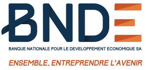
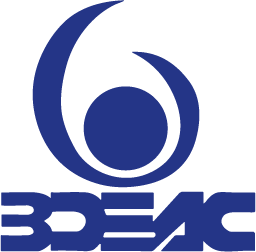

Africa is entering a decisive phase in its economic development. Rapid urbanisation, demographic expansion and industrial transformation are creating unprecedented demand for infrastructure, financial sector strengthening and private sector investment. Meeting these ambitions requires significant mobilisation of long-term capital and innovative financial solutions adapted to local realities.
At Arthemis Capital, we believe that access to capital remains one of the most critical drivers of sustainable economic growth across the continent.
Bridging Global Capital and African Opportunity
International liquidity exists across banks, institutional investors, export credit agencies and private credit platforms. However, successfully deploying that capital into emerging markets requires disciplined structuring, credibility and alignment between stakeholders.
Our role is to bridge this gap.
From our base in the United Kingdom, Arthemis Capital works alongside governments, financial institutions and corporates to structure transactions capable of attracting international financing while supporting national development priorities.
Each mandate requires balancing financial innovation with execution certainty.
Infrastructure as a Catalyst for Development
Infrastructure remains central to Africa's long-term growth trajectory. Transport networks, ports, energy assets, healthcare infrastructure and education programmes are essential foundations for economic competitiveness and regional integration.
Through EPC + Finance structures, project finance solutions and Public Private Partnership frameworks, Arthemis Capital supports the delivery of projects designed to generate lasting economic impact.
Advisory mandates involving large-scale infrastructure initiatives — including projects associated with groups such as Petrolin — illustrate the increasing scale and ambition of opportunities emerging across the continent.
Strengthening Financial Institutions
A resilient banking sector is equally essential to economic expansion. African financial institutions continue to play a pivotal role in supporting entrepreneurship, trade and investment. Strengthening bank balance sheets through subordinated capital, structured financing and strategic advisory remains a priority across many markets.
Arthemis Capital has been privileged to support institutions including:
- Afriland First Bank
- NSIA Banque
- Banque Nationale de Développement du Sénégal
- Banque de Développement des États de l'Afrique Centrale
Institutions We Have Supported
 Afriland First Bank
Afriland First Bank NSIA Banque
NSIA Banque
BNDE
BDEACThese engagements reflect the importance of long-term partnerships built on trust and execution capability.
The Importance of Independent Advisory
Complex transactions increasingly involve multiple stakeholders — governments, lenders, contractors and investors — each with distinct objectives.
Independent financial advisory plays a critical role in aligning these interests and ensuring that transactions remain sustainable over the long term.
As an independent firm, Arthemis Capital focuses exclusively on delivering solutions aligned with client objectives and successful execution outcomes.
Looking Ahead
The coming decade will likely redefine capital flows into Africa. New financing structures, deeper collaboration between public and private sectors and increased participation from international investors will shape the next generation of projects across the continent.
Arthemis Capital remains committed to supporting this evolution by mobilising capital responsibly and contributing to projects that foster long-term economic transformation.
We view every mandate not simply as a transaction, but as an opportunity to contribute to sustainable growth and institutional development across Africa.